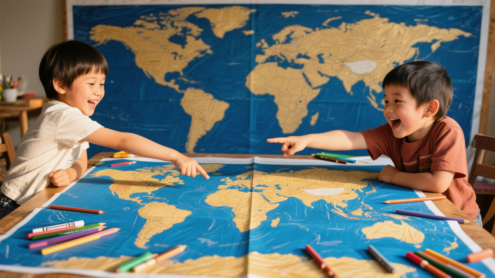

Your child designs an entire world from imagination — maps, creatures, cultures, and legends that are uniquely theirs. 你的孩子从想象中设计一个完整的世界 — 地图、生物、文化与传说，独一无二。
The Worldbuilding Workshop is a guided creative experience where children aged 8–14 build their own original mythology from scratch. Through drawing, storytelling, and collaborative design, they create maps, creatures, cultures, and legends — not by choosing from existing mythologies, but by inventing their own.
世界观工作坊是一项引导式创意体验，8-14岁的孩子从零开始构建属于自己的原创神话。通过绘画、叙事和协作设计，他们创造地图、生物、文化与传说——不是选择已有的神话体系，而是发明自己的。
My son spends hours watching other people's stories on screens. But when I ask him to make his own, he freezes. He's creative — he just doesn't know where to start. 我儿子花好几个小时看屏幕上别人的故事。但当我让他自己编一个时，他就僵住了。他有创造力——只是不知道从哪里开始。— Sarah Chen, parent of a 10-year-old · Shanghai
In the Worldbuilding Workshop, your child doesn't follow someone else's story — they become the architect of their own world. We provide the structure, prompts, and expert guidance; they provide the imagination. By the end, they'll have a complete, original world — with maps, creatures, and legends — that they can tell stories in for years.
在世界观工作坊中，你的孩子不是跟随别人的故事——他们成为自己世界的建筑师。我们提供结构、提示和专业引导；他们提供想象力。最终，他们将拥有一个完整的原创世界——有地图、生物和传说——可以在其中讲述故事，持续多年。
We start with prompts and questions: What if the sky was green? What lives in the deepest ocean? Imagination unlocks first.
我们以提示和问题开始：如果天空是绿色的呢？最深的海底住着什么？想象力首先被解锁。
Maps take shape. Mountains rise, rivers carve paths, cities emerge. Your child's world gets a geography.
地图成形。山脉升起，河流开辟路径，城市浮现。你的孩子的世界有了地理。
Creatures, cultures, and characters are born. Who lives here? What do they believe? What legends do they tell?
生物、文化和角色诞生了。谁住在这里？他们信仰什么？他们讲述什么传说？
The world's founding myth is written. Your child has created something entirely their own — a world ready for stories.
世界的创始神话被书写。你的孩子创造了完全属于自己的东西——一个准备好迎接故事的世界。
Every world starts with the right tools — compass, ink, and imagination.
By the end of the workshop, your child will have designed:
工作坊结束时，你的孩子将设计出：
🗺️ 一张包含地理、生物群系和地标的完整世界地图
🐉 原创生物及其栖息地、行为和生态角色
🏛️ 至少一种文化及其传统、信仰和日常生活
📖 一个创始神话——他们世界的起源故事
Every package includes guided facilitation, all materials, and a digital copy of your child's world.
| Feature特色 | Taster Session体验课 | Full Workshop完整工作坊 | World Builder+世界构建者+ |
|---|---|---|---|
| Duration时长 | 90 minutes | 4 × 2 hours | 6 × 2 hours |
| World map creation世界地图创作 | ✓ | ✓ | ✓ |
| Creature design生物设计 | Intro | ✓ | ✓ |
| Culture & legends文化与传说 | — | ✓ | ✓ |
| Printed world map印刷版世界地图 | — | — | ✓ |
| Take-home materials带回家材料 | Digital | Digital | Digital + Print |
| Group size小组人数 | 4–8 kids | 4–6 kids | 3–6 kids |
| Age range年龄范围 | 8–14 | 8–14 | 8–14 |
| Price价格 | ¥288 | ¥988 | ¥1,488 |
Sibling discount: 15% off the second child · 同行兄弟姐妹享85折
"My daughter created a world where music grows on trees. She hasn't stopped talking about it for three weeks. This workshop unlocked something I didn't know she had."
"As a teacher, I was skeptical. But the structure is brilliant — it guides without constraining. Every child in the group built something completely different. I've never seen anything like it."
"My son is usually glued to his iPad. In this workshop, he forgot it existed. He came home and immediately started drawing his world's map on the kitchen table."
The world your child builds doesn't end with the workshop. It becomes the setting for our Storytelling Game — a weekly tabletop role-playing adventure where they create characters, face challenges, and build a shared legend with friends. Every adventure ends in a beautifully printed storybook they keep forever.
你的孩子构建的世界不会在工作坊结束时消失。它将成为我们叙事游戏的舞台——每周一次的桌面角色扮演冒险，在其中他们创造角色、面对挑战，与朋友共同构建传奇。每次冒险结束时，都会制作一本精美印刷的故事书，永久珍藏。

Worlds are better when built together.
Not at all. The workshop focuses on ideas and imagination, not art skills. We provide templates, prompts, and guidance that work for every skill level. Some of our most inventive worlds were built by kids who said "I can't draw."
完全不需要。工作坊专注于想法和想象力，而非绘画技巧。我们提供适合各种技能水平的模板、提示和引导。一些最有创意的世界正是由那些说"我不会画画"的孩子构建的。
It's the foundation. Your child builds the world first — the geography, creatures, and cultures. Later, they can play tabletop adventures set in that world through our Storytelling Game. Think of it as creating the setting before writing the story.
它是基础。你的孩子先构建世界——地理、生物和文化。之后，他们可以通过我们的叙事游戏在那个世界中冒险。可以把它想象成在写故事之前先创造舞台。
Every child is creative — they just need the right structure to express it. Our facilitators are trained to draw out even the most reluctant imaginations. The workshop's step-by-step process means no child ever faces a blank page.
每个孩子都有创造力——他们只是需要正确的结构来表达。我们的引导师受过专业训练，能够激发哪怕最不情愿的想象力。工作坊的逐步流程意味着没有孩子会面对空白页。
Absolutely. We offer a 15% sibling discount and can adjust the experience for different ages within the same family. Many of our best worlds were co-created by siblings.
当然可以。我们提供15%的兄弟姐妹折扣，并可以根据同一家庭中不同年龄调整体验。许多最精彩的世界正是由兄弟姐妹共同创造的。
Sessions are available in English, Chinese, or bilingual. Choose what works best for your child. Our facilitators are fluent in both languages.
课程可选英文、中文或双语授课。选择最适合你孩子的方式。我们的引导师精通两种语言。
Get in touch and we'll help you choose the right workshop for your child.联系我们，我们将帮你为孩子选择合适的工作坊。
Start Your Child's World →